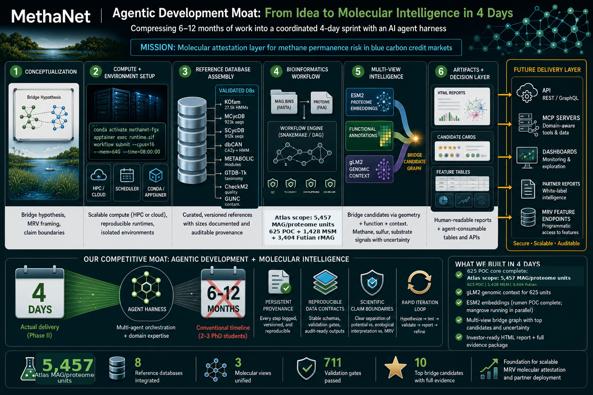
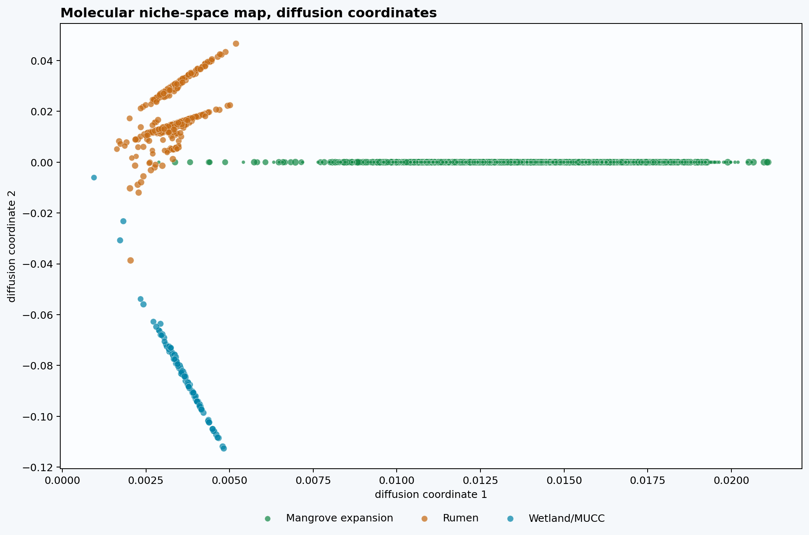
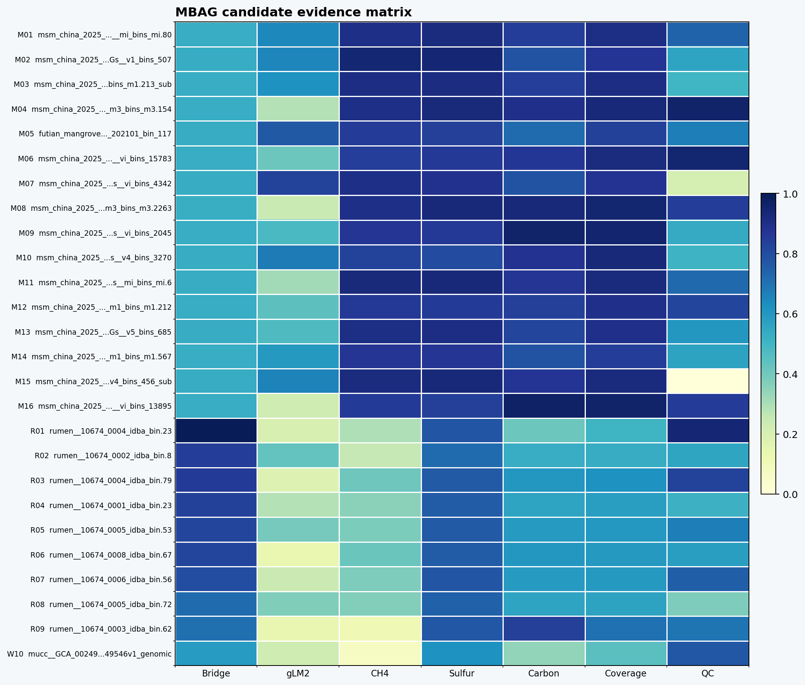
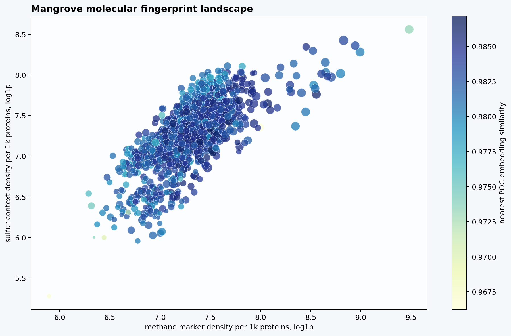
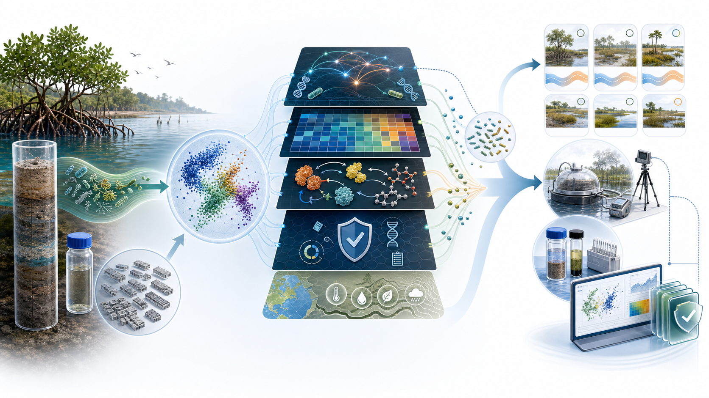

Executive Summary
MethaNet's near-term product is not another annotation report; it is a molecular attestation layer for methane permanence-risk screening. MBAG, the MethaNet Bridge Attestation Graph, asks whether a latent ESM-2 bridge candidate is supported by independent functional biology, genomic context, QC, taxonomy, and provenance. That turns raw MAG outputs into reviewable evidence objects a partner can understand and a technical reviewer can challenge.
The market problem is timing. Blue-carbon projects need earlier warning on methane permanence risk, but field flux data are expensive, sparse, and often retrospective. MBAG does not replace flux validation; it creates an auditable molecular intelligence layer that helps decide where monitoring, diligence, and experimental validation should focus before a project depends on late-stage surprises.
The atlas is now large enough to inspect cross-ecosystem molecular patterns, not just report run progress. This snapshot contains 2,352 release-required tri-view MAG/proteome units: 625 MAG/bin-comparable POC rumen + wetland/MUCC units and 1,727 registered mangrove units with ESM-2, gLM2, and functional evidence.
The registered mangrove expansion is now a target-domain screening surface, not yet a sample-level MRV layer. Across 4,584 registered mangrove ready payloads, 4,584 have ESM-2 embeddings, 4,584 have gLM2 context, and 1,727 have functional evidence in this latest render. For this release, 1,727/4,583 release-required mangrove payloads have all three views; 2,856 release-required ready payloads are retained as pending-functional records, and 248 source-lane gap rows remain visible outside the ready payload denominator. This release denominator explicitly excludes 1 incomplete unit(s); the excluded rows remain in the freeze manifest, status tables, and report bundle rather than being dropped.
The strongest value today is decision-grade triage. This report identifies bridge-like molecular neighborhoods, candidate mechanism signatures, provenance readiness, and monitoring-priority hypotheses. It supports partner-facing proof points and MRV feature primitives, while explicitly stopping short of final sample-level risk tiers, measured methane flux, or crediting decisions.
How To Read This Report
This artifact is a standalone demonstration of MethaNet's operating thesis: molecular evidence can make methane-risk diligence earlier, more explainable, and more auditable before expensive field validation arrives. It should be read as a bridge from raw MAG/proteome computation to partner-facing decisions: which molecular neighborhoods deserve attention, which mechanisms support or weaken the concern, which evidence is missing, and what field or metadata work would convert a hypothesis into a stronger MRV feature.
It is not a warehouse snapshot with nicer charts. The warehouse is the substrate; the report is the decision layer that organizes ESM-2 geometry, functional machinery, genomic context, source provenance, and claim boundaries into a reviewable molecular-attestation narrative.
The report deliberately separates three levels. The first level is discovery: ESM-2 neighborhoods identify candidates that are molecularly near a reference domain or target-domain pattern. The second is attestation: functional annotations, gLM2 context, QC, taxonomy, and provenance test whether a candidate has reviewable biological support. The third is product translation: sample linkage, abundance, environmental covariates, uncertainty, and flux/process validation are still required before sample-level risk scoring. That hierarchy is the value proposition: MethaNet is not claiming final risk from a pretty map; it is creating an evidence chain that tells partners where to look, why to care, and what must be validated next.
The Operating Model Behind The Atlas

The infographic summarizes the operating flywheel: concept framing, compute-agnostic environment setup, reference database assembly, MAG/proteome processing, multiview feature generation, report-ready interpretation, and future API/MCP delivery. This is MethaNet's execution moat, while the biological claims below still come only from audited ESM-2, functional annotation, gLM2, QC, taxonomy, and provenance evidence.
Source Provenance And Environmental Readiness
Environmental metadata now makes MBAG provenance-aware, not sample-scoreable. The report can explain where each evidence lane comes from and how close it is to sample/site rollup, but it cannot yet convert MAG-level molecular potential into final environmental methane-risk scores. That distinction is strategically valuable: it tells partners what is already auditable and tells the team exactly what metadata gaps must close next.
| Evidence lane | Report units | Metadata universe | Primary source | Resolution now | Use now | Blocking gap |
|---|---|---|---|---|---|---|
| Rumen reference | 518 | 555 embedded POC rumen proteomes | Stewart et al. 2019; ENA PRJEB31266 | 555/555 exact ERZ analysis-accession matches | Methane-domain reference provenance and source-aware bridge comparison | Animal/sample-level environmental metadata is mostly cohort-level; not blue-carbon sample context |
| Wetland/MUCC target | 107 | 107 embedded wetland/MUCC Methanoregula proteomes | Bechtold et al. 2025; MUCC v2.0.0 Zenodo 10.5281/zenodo.14532347 | 20 exact NCBI assembly/BioSample; 23 OWC bin plus site/project; 64 source-bucket rows | Target-domain provenance, wetland source-bucket context, and metadata-readiness triage | Uniform MAG-to-sample BioSample mapping for JGI/PPR/STM/source-bucket rows |
| Mangrove/Futian target | 3,404 | 3,404 phase-1 rMAGs; 3,156 ready payload rows; 248 explicit gap rows | Qi et al. 2026; Figshare 10.6084/m9.figshare.30883646.v3 | 300/3,404 tri-view units in the current functional snapshot; 65 exact sediment sample metadata rows | Interim mangrove/mudflat molecular niche expansion and time/depth/habitat readiness design | Bacteria functional completion, depth-resolved MAG-to-sample assignment, abundance/read coverage, and flux/process validation |
| Mangrove/MSM target | 1,428 | 1,428 local MAG candidates; source paper reports 966 final MAGs | Pan et al. 2025; GigaDB 10.5524/102702; NCBI PRJNA1150796 | 1,427/1,428 tri-view units; 82 sediment sample rows; 71 exact BioSample rows | Target-domain molecular screening and sample-readiness prioritization | MAG-to-sample assignment and 966-vs-1428 denominator reconciliation before sample/site rollups |
Denominator note: the POC crosswalk and environmental reconciliation cover the broader 662 embedded POC proteome universe, while this report renders the 625 MAG/bin-comparable POC units plus the registered mangrove payloads selected by the lane registry. Rows that are pending, mixed-resolution, or not yet sample-linkable remain visible as readiness states rather than being treated as biological absence.
MBAG: Three Molecular Views, One Attestation Layer
The MethaNet Bridge Attestation Graph is designed to turn molecular similarity into a reviewable evidence trail. A 2D embedding bridge can be a powerful discovery signal, but it is not a mechanism. MBAG therefore treats each candidate as a convergence test across three molecular views plus explicit guardrails.
For partner communication, the useful output is a candidate card, a feature primitive, or a monitoring-priority hypothesis. The proprietary scoring details can remain internal; the report exposes the evidence pillars and claim boundaries needed for trust.
Why Molecular Niche Space Is The Right Lens
The core question is geometric and biological at the same time. Methane permanence risk is not driven by one marker in isolation; it emerges from molecular machinery, substrate access, redox and sulfur context, genome quality, ecological source, and eventually sample abundance and environmental conditions. Molecular niche space gives MethaNet a way to ask whether MAGs occupy similar biological neighborhoods before claiming anything about site-level methane behavior.
In this report, ESM-2 defines the latent neighborhood structure, functional annotations explain what those neighborhoods encode, and gLM2 tests whether local genomic organization adds contextual support. The right interpretation is not "this MAG emits methane"; it is "this MAG deserves review because multiple molecular views point to a methane-relevant niche hypothesis."
The bridge rationale is therefore intentionally conservative. A bridge MAG is not defined by where a dot falls on a 2D projection. It is a MAG/proteome unit whose high-dimensional ESM-2 neighborhood, nearest reference-domain similarity, functional mechanisms, gLM2 context, QC, taxonomy, and provenance jointly make it worth review. Diffusion coordinates are used as the primary navigation view because they are built from the same neighborhood graph used for evidence inspection. UMAP, t-SNE, and PCA are included as sensitivity views; PHATE is supported when available, but the report does not require it and does not treat any projection as proof.
Scientific anchors: ESM-2 protein language model medium-sized protein language models for transfer learning dimension-reduction evaluation principles Diffusion maps PHATE for biological manifolds similarity network fusion graph ML for integrated multi-omics UMAP documentation. Recent dimensionality-reduction benchmarks reinforce the design choice: visual methods differ in local and global preservation, so the report exposes the high-dimensional kNN substrate and candidate evidence cards rather than letting a single projection carry the claim.
Molecular Niche-Space Bridge Map
The bridge map is a navigation layer, not the final decision rule. It displays every embedding-bearing MAG/proteome unit in the release payload and overlays auditable high-dimensional evidence links from the original 1,280-dimensional ESM-2 space. Rows that lack embeddings, such as source-lane gap records, remain in the status tables instead of being forced onto the manifold.
Gold links connect selected case-study candidates to their nearest POC reference neighbor. Gray and teal links show cross-domain kNN evidence from the ESM-2 neighborhood graph. Points are colored by source ecosystem, point size follows the provisional internal MBAG review index, and dim points mark units that still lack functional evidence. The practical use is fast triage: click a case-study halo, inspect the nearest reference, then ask whether the functional, gLM2, QC, taxonomy, and provenance layers support or contradict the bridge hypothesis.
Static fallback

Candidate Signatures Turn Audit Tables Into Review Cards
MBAG candidates should be inspected as signatures, not as a long spreadsheet. The TSV evidence remains in the artifact package for audit, but the report view emphasizes the evidence pillars a scientist, partner, or investor can reason about: bridge geometry, gLM2 context, methane machinery, sulfur context, carbon/substrate breadth, annotation coverage, and QC support.
The matrix shows candidate-level support. The radial evidence-pillar view summarizes selected candidate-card support for POC rumen, POC wetland, and registered mangrove candidates; the wetland value is a single-card value in this render. These are review signals, not full-lane summaries and not final methane-risk scores.
MBAG candidate evidence matrix
Rows are candidate cards and columns are normalized evidence pillars. The source-colored strip at left separates POC rumen, POC wetland, and registered mangrove candidates.
Evidence pillar wheel
Each ring is a selected candidate source group; longer arcs indicate stronger average support for that evidence pillar across the selected candidate cards.
Static fallback

Mangrove Molecular Fingerprint Landscape
Mangrove turns the report from a POC bridge story into a target-domain screening surface. This panel uses only mangrove MAGs with completed functional outputs. The axes are normalized by protein count, so the pattern reflects marker density rather than raw annotation volume: x is methane marker density per 1,000 proteins, y is sulfur-context density per 1,000 proteins, size is CAZy/MEROPS substrate breadth per 1,000 proteins, and color is nearest POC embedding similarity.
Commercially, this is the first layer of a monitoring-priority map: candidates with strong methane machinery, weak sulfur competition context, broad substrate capacity, and good QC are not "high-risk sites" yet, but they are the kind of molecular signal that should shape sampling, flux validation, and partner diligence.
Static fallback

Sample-Linkage Readiness: Where MAG Signals Can Start Rolling Up
This panel converts MAG/proteome evidence into the strongest defensible environmental context available today. Futian rows are grouped by site-month context with chemistry metadata available at multiple depth samples; MSM rows are grouped by source sample/BioSample sets. The dark bar overlay marks how much of each context already has all three molecular views: ESM-2, gLM2, and functional annotations.
The new information is operational rather than crediting-oriented: it shows which contexts are most ready for abundance mapping, metadata reconciliation, and field validation. It does not rank samples by methane risk, because per-MAG abundance, exact sample assignment, environmental permissiveness, and flux/process validation are still required.
From MAG Fingerprints To Environmental Methane-Risk Scoring
The atlas becomes commercially transformative when MAG/proteome fingerprints can be rolled up to physical samples, metagenomes, sites, and monitoring periods. The current report is deliberately MAG-level: it says which genomes encode methane-relevant potential, sulfur competition context, substrate-processing capacity, QC confidence, and bridge-neighborhood evidence. Environmental methane-risk scoring begins only when those molecular fingerprints are weighted by abundance, connected to sample provenance, and interpreted alongside measured or carefully tiered environmental covariates.

Graphical abstract. MethaNet's current evidence layer operates at MAG/proteome grain: ESM-2 and gLM2 context, methane/sulfur/substrate annotations, QC, taxonomy, and provenance define molecular fingerprints for bridge-candidate review. The next product layer links those fingerprints to physical samples or metagenomes, weights them by MAG/read abundance and unbinned marker evidence, adds environmental permissiveness covariates, uncertainty, and flux/process validation status, then emits sample risk readiness labels such as not_scoreable, needs_metadata, needs_abundance, needs_environment, needs_flux_validation, monitor_more, or scoreable_provisional when evidence is sufficient. This is an evidence-to-readiness workflow for monitoring and validation design, not a final MRV risk score, measured methane-flux result, A-E risk tier, or carbon-credit approval.
A defensible sample score should therefore combine four layers. First, the molecular layer estimates methane machinery, sulfur competition, substrate breadth, genomic context, and annotation confidence across all MAGs and unbinned marker evidence in the sample. Second, the community layer weights those signals by read coverage, relative or absolute abundance, pathway redundancy, and the fraction of community signal left unassembled or unbinned. Third, the environmental layer captures whether local conditions make methane expression plausible: salinity, sulfate, redox or oxygen proxies, pH, temperature, organic carbon quantity and quality, sediment depth, vegetation, tidal/hydrologic regime, season, and restoration status. Fourth, the validation layer anchors the score against chamber fluxes, dissolved methane, porewater chemistry, incubation assays, or repeated field observations.
1. Link molecules to samples
Resolve MAG-to-sample and MAG-to-site provenance, keep resolution tiers, and preserve unlinked MAGs as not scoreable rather than forcing a risk estimate.
2. Weight by community abundance
Turn genome potential into sample capacity using MAG coverage, marker abundance, unbinned functional reads, and uncertainty from incomplete assembly.
3. Add environmental permissiveness
Use measured metadata first, modeled covariates second, and mark every salinity, sulfate, redox, substrate, depth, and vegetation field by evidence tier.
4. Calibrate with field evidence
Use flux, porewater, geochemistry, and temporal resampling to learn which molecular signatures predict methane risk under real blue-carbon conditions.
This is why field work is not a downstream formality; it is the learning engine that turns MBAG from a molecular atlas into a progressively stronger risk system. Dense sampling across mangroves, salt marshes, freshwater wetlands, restored sites, degraded sites, salinity gradients, depth profiles, seasons, and management regimes will expand the molecular niche map, expose source-specific blind spots, and calibrate which bridge signatures matter in blue-carbon settings. Every new sample can strengthen the atlas if it arrives with clean provenance, abundance, environmental measurements, and a validation target.
The immediate product interpretation is a sample risk readiness layer, not a final A-E risk tier. A sample can be labeled scoreable, monitor more, needs metadata, needs abundance, needs environmental covariates, or needs flux validation. That language is honest, useful for partners, and strategically powerful: it converts MethaNet's current molecular evidence into a concrete sampling and diligence plan while building the evidence base needed for future calibrated methane-risk scoring.
Strategic Readout: From Molecular Attestation To MRV Product Readiness
Bottom line: MBAG is no longer just a visualization or a warehouse snapshot; it is a defensible evidence product. The expanded atlas turns thousands of MAG/proteome artifacts into a queryable evidence surface where bridge-neighborhood structure, methane/sulfur/substrate annotations, genomic-context perturbation, QC, taxonomy, and provenance can be inspected together. That is already valuable for partner proof, candidate prioritization, monitoring design, and future dashboard/API feature delivery.
Now, MethaNet can show that molecular bridge candidates are not selected from embedding geometry alone; they are audited against independent functional machinery, genome context, quality controls, taxonomy, and provenance readiness. Next, those MAG/proteome signatures must be converted into sample-linked, abundance-aware, uncertainty-aware MRV feature primitives. Not yet: no final risk tiers, no measured methane flux, and no carbon-crediting conclusion should be inferred from this artifact.
The strategic implication is clear and bounded. MethaNet is building an upstream molecular attestation layer for blue-carbon methane diligence: a system that can flag where permanence risk deserves attention, explain why a candidate is plausible or weak, and preserve the evidence chain for technical review. This is what makes the platform different from a generic data wrapper: the output is an auditable molecular decision object with an explicit path to validation. The stronger MRV claim comes only after MAG-to-sample links, abundance/read coverage, environmental covariates, phylogeny/source controls, uncertainty propagation, and validation against flux or process measurements are in place.